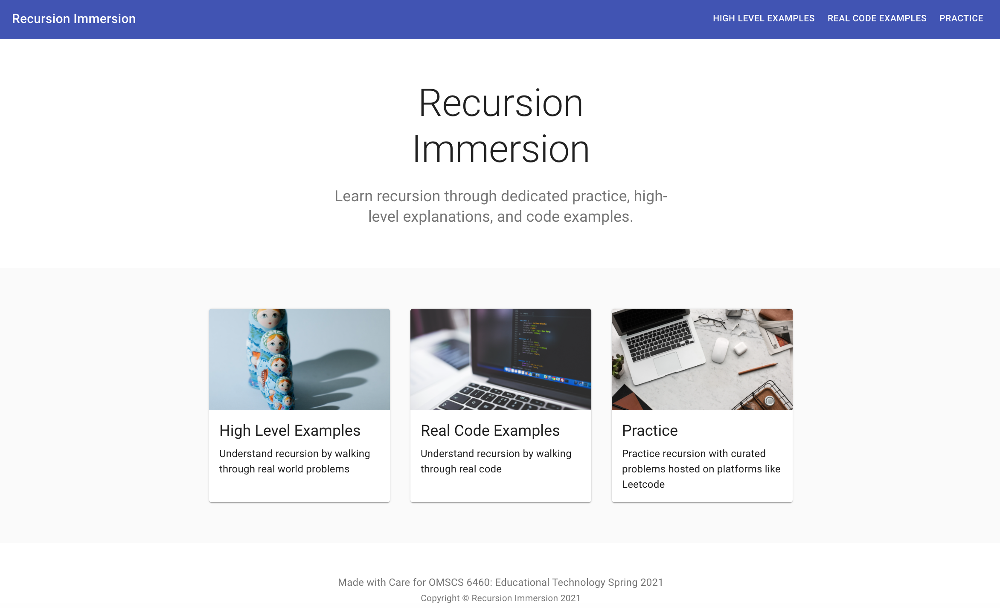
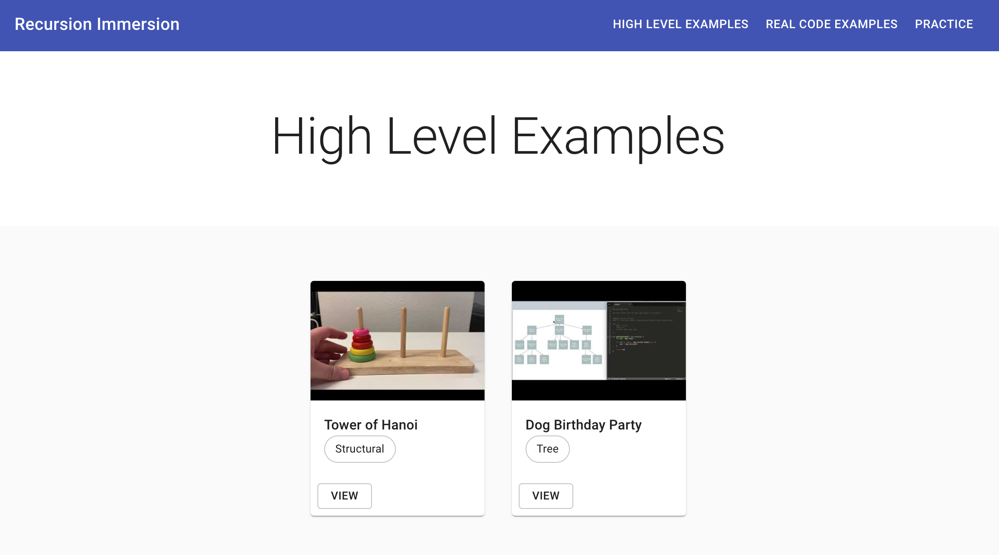
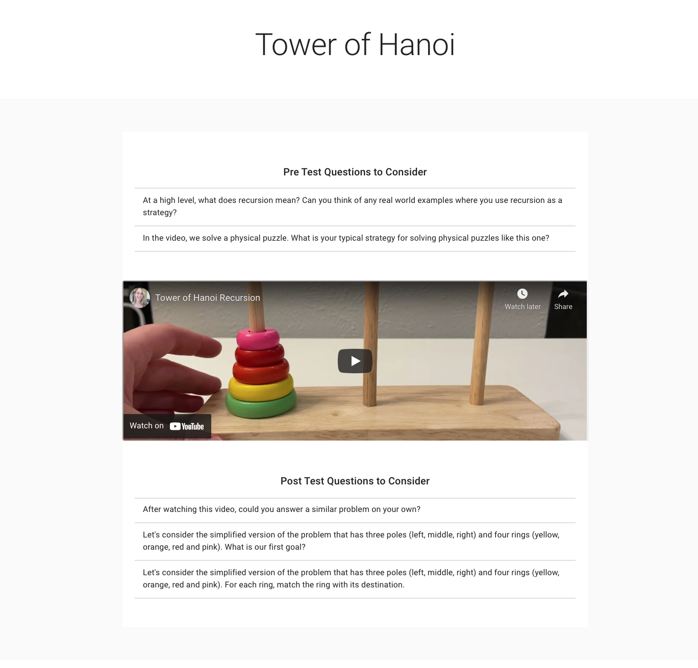
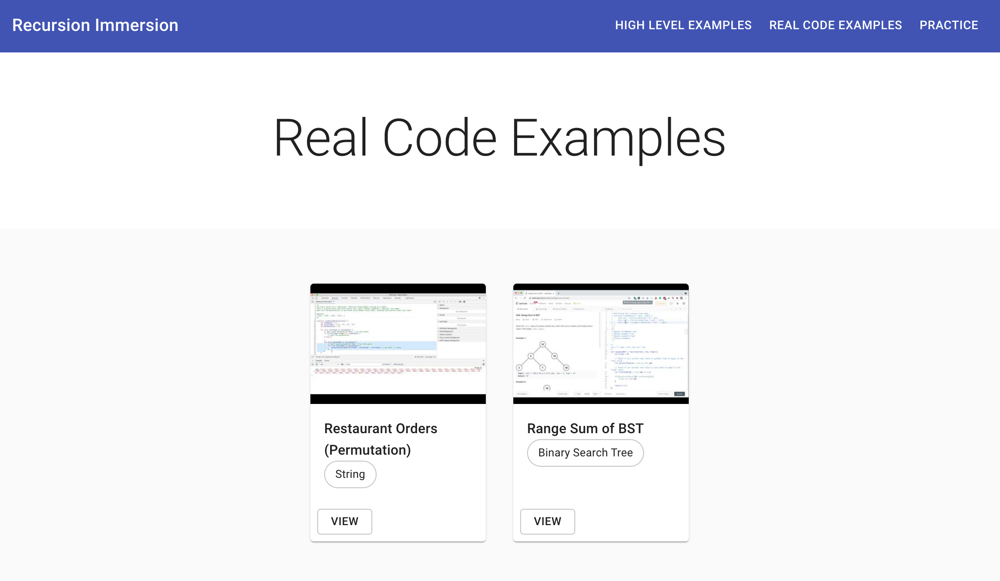
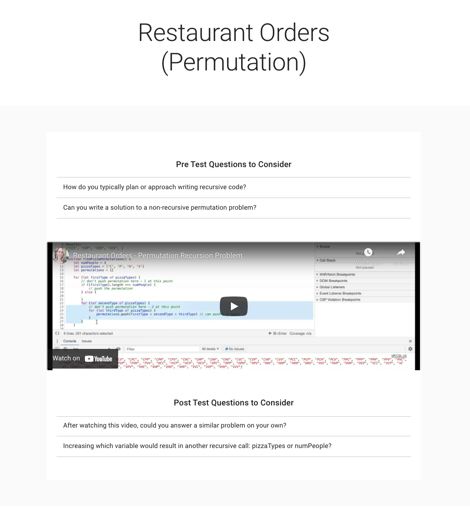
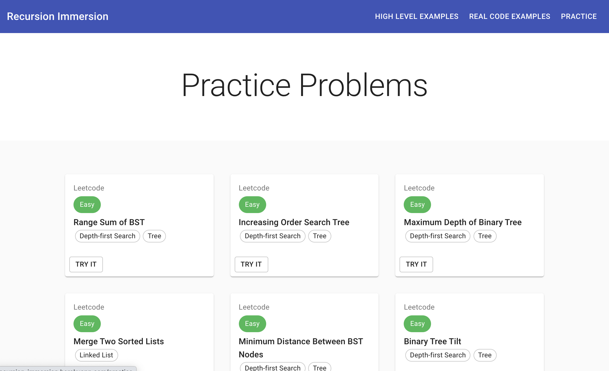
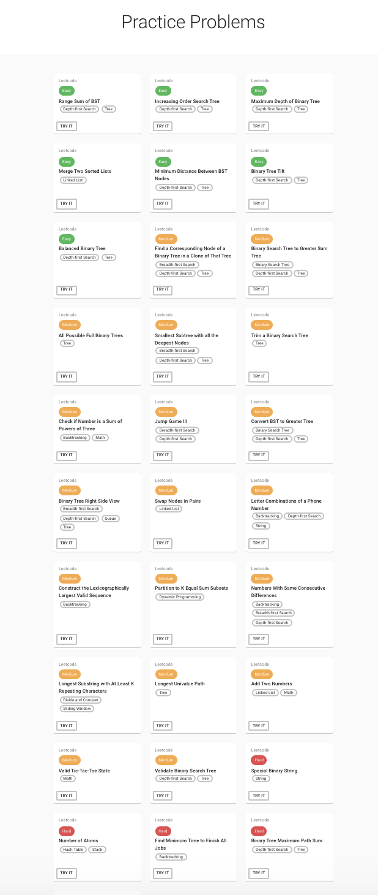

Overview
Recursion is introduced early in computer science curricula but remains one of the hardest concepts for novice programmers to learn—and one of the hardest for instructors to teach. There are many effective strategies, but no one-size-fits-all approach. Students who struggle often conclude they aren't capable of succeeding in CS, when the real problem is that they haven't found a strategy that clicks for them.
Recursion Immersion addresses this by combining structural, mathematical, game-based, and code-level teaching techniques into a single platform where learners can try different approaches until one makes sense—then focus on the problem types they find most difficult.
This was a semester-long solo project for Georgia Tech's Educational Technology course (Development Track), grounded in literature review and iterative feedback from peers and bootcamp students.
Problem
As a technical mentor to novice adult programmers, I saw the same pattern repeatedly: students told to "just practice" recursion without understanding it first. My approach was to walk through problems step by step—but different students need different strategies, and recursion spans many problem types (trees, permutations, physical puzzles). Some students excel at one type while struggling with others.
Existing tools and curricula typically pick one or two techniques and require students to follow a fixed sequence. Industry learners often self-teach via YouTube or LeetCode without a structured path from intuition to code. The gap: a flexible, centralized platform that bridges high-level understanding, coding recursive solutions, and deliberate practice.
Research foundation
Literature review covered major teaching strategies and their limitations:
- Structural recursion — physical structures like nesting dolls or bulls-eyes (Kruse, 1982; Bruce et al., 2005)
- Mathematical recursion — fractals, geometric shapes, mathematical induction (Elenbogen & O'Kennon, 1988; Gordon, 2006)
- Games — Cargo-Bot, acting out Tower of Hanoi in class (Chaffin et al., 2009; Lee et al., 2014; Benander & Benander, 2008)
- Recursive graphs — visualizing call order (Hsin, 2008; identified for future work)
Common gaps in prior research: small samples without control groups, lack of replication, and reliance on self-reported understanding rather than measurable outcomes. This project aimed to build a tool informed by that research while acknowledging those evaluation limitations.
Solution — the application
Recursion Immersion is a web-based application with three sections—a "choose your own adventure" experience where learners start wherever their current understanding requires:
1. High Level Examples
Videos and pre/post-test questions focused on recursion without code—real-world and diagram-based problems that build intuition first.
- Tower of Hanoi — physical puzzle
- Dog Birthday Party — tree traversal with diagram and code
2. Real Code Examples
Videos and pre/post-test questions at the code level—problems that aren't easily drawn out, teaching techniques like solving the simplest case first and building up.
- Restaurant Orders (Permutation)
- Range Sum of BST — LeetCode-style tree problem
3. Practice Problems
Curated links to external coding problems with difficulty ratings and category tags (Trees, Linked Lists, etc.) so learners can apply techniques through deliberate practice and focus on weak areas.
Target audience: novice adult programmers (though applicable to any learner comfortable with JavaScript). Goal: a centralized place to learn recursion techniques and bridge the gap between high-level understanding, writing recursive code, and tackling varied problem types.
Screenshots
Application UI from the shipped Recursion Immersion platform. Pre/post-test questions are in the final paper appendices.







Technology stack
- Frontend: React, JavaScript, HTML/CSS, Material UI
- Build: Webpack, Babel
- Backend: Node, Express
- Database: PostgreSQL (videos, pre/post-test questions, practice problems)
- Hosting: Heroku (functional prototype; no longer deployed)
The application was built and evaluated as a working prototype. Screenshots, instructional videos, and written deliverables below document the design and outcomes—the live deployment is no longer available.
Methodology & evaluation
Evaluation combined peer review throughout the semester with live student feedback from bootcamp recursion lectures and office hours (~25–30 adult learners per class).
- Four rounds of peer feedback on research
- One round on build plan, two rounds on development progress
- Recursion lectures iteratively restructured around the three app sections
- Most recent lecture: live Tower of Hanoi demo → Restaurant Permutation demo → array flattening practice problem
- Example videos shared with three students for async feedback
Results
Peer feedback
Overall positive—peers reported the topic resonated personally and that they would use the tool. Design praised as clean and easy to follow. Implemented suggestions included reordering pages (Practice Problems moved to the right). Suggestions not implemented in time: recursive call visualization and bookmarking problems.
Student feedback
Tower of Hanoi (live demo): Some students had trouble following the pattern and connecting it to code. All but two felt they could solve the puzzle on their own; one understood the high-level pattern but worried about details.
Restaurant Permutation (live demo): Strategy shown was to solve with for loops first, restructure loops identically, then move code into recursive calls. All students could write the loop solution; some were confused at the recursion step. One student preferred their existing strategy.
Async video feedback: Three students who received example videos from the site all self-reported they were helpful for understanding.
Limitations & future work
One-semester scope limited the number of lecture iterations and student sample size. Feedback was largely subjective (self-reported understanding) rather than quantitative pre/post testing—a gap the paper identifies explicitly.
Planned improvements include:
- GitHub authentication and progress tracking (partially built; session bug prevented completion)
- Pre/post-test answer submission and aggregated difficulty data
- Recursive call visualization (recursive graphs)
- Problem-type detail pages combining all three sections per category
- Discussion forum and expanded problem/video library
Reflection
There is no single perfect way to teach recursion—different students resonate with different strategies. The value of this tool is flexibility: learners gravitate toward the examples and problem types they need most, rather than following a fixed curriculum. Early student feedback is optimistic, but rigorous evaluation would require quantitative pre/post testing across larger cohorts over longer periods—the natural next step.
This project directly connects my teaching experience at Hack Reactor to formal learning science research and shipped software—a through-line central to how I think about capability-building products today.
Final presentation
 Watch final presentation on YouTube
Watch final presentation on YouTube
Artifacts
Full research trail from proposal through final evaluation—papers, videos, and process documents.